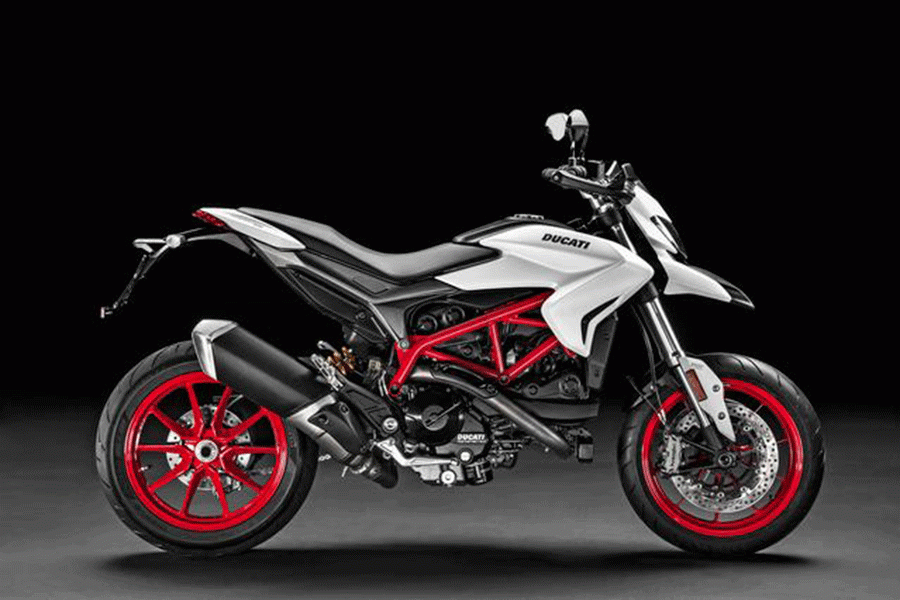

New Ducati Hypermotard 939 Langsing dan Menggiurkan
Nov 7, 2017 BOLOGNA (DP) — Ducati Hypermotard 939 kini membawa sentuhan warna baru, yakni Star White Silk. Warna dasar putih pada bodi menyesuaikan dengan warna merah pada pelek.
Tidak itu saja, ubahan terus berlanjut ke bagian kaki-kaki. Suspensi Ducati Hypermotard 939 kini mengaplikasikan Kayaba 43 mm up-side-down dengan sok belakang Sachs yang dapat disesuaikan.
Lewat sejumlah ubahan, bobot New Ducati Hypermotard 939 tereduksi dengan angka terbaru 181 kg dan ketinggian jok 870 mm. Pelek 17 inci 10 palang dibalut ban Pirelli Diablo Rosso II, 120/70 bagian depan dan bagian belakang Pirelli Diablo Rosso II 180/55.
Bicara mesin, dipasangkan Ducati Testastretta Twin cylinder, 4-valve, Desmodromic, liquid-cooled 937 cc. Diklaim mampu memuntahkan tenaga sebesar 110 hp pada 9.000 rpm dan torsi 95 Nm pada 7.500 rpm.
Transmisi manual 6-percepatan dilengkapi dengan wet multiplate clutch, self-servo action dan slipper action on over-run. Sistem pengereman menggunakan fitur keselamatan 3-level ABS, 8-level Ducati Traction Control dan 3 mode berkendara.
Ducati Hypermotard New Ducati 939 juga meningkatkan performa untuk versi Sporty yaitu Hypermotard 939 SP. Pada varian teratas ini bobotnya hanya 178 kg.
Untuk Hypermotard 939 SP menggunakan suspensi Ohlins up-side-down 50 mm fully-adjustable, dan Ohlins shock absorber fully-adjustable sebagai fitur standard pada versi Sporty.